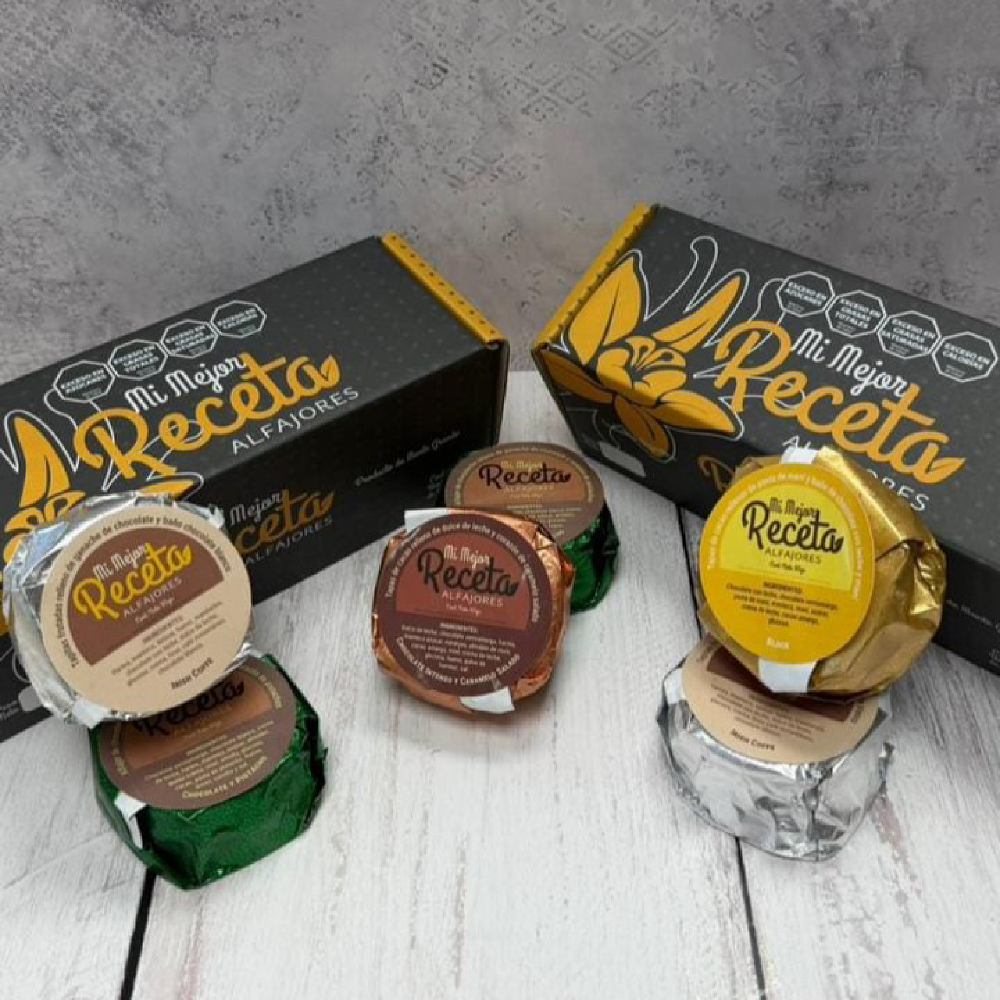
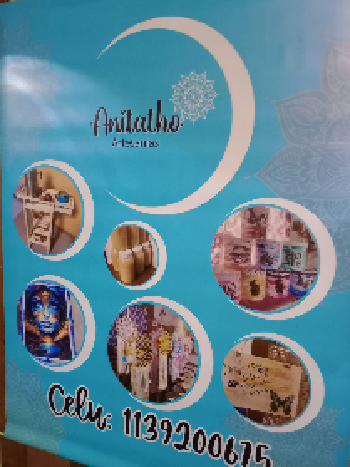

Identidad visual


Desarrollo de sistemas de identidad, logotipos, aplicaciones gráficas y piezas de comunicación.

Soy diseñador gráfico enfocado en la creación de piezas visuales, identidad gráfica y comunicación visual. En este portfolio presento algunos de mis proyectos académicos y profesionales, explorando diferentes áreas del diseño y buscando soluciones visuales claras, funcionales y creativas.
Soy estudiante de Diseño Gráfico y me interesa especialmente el desarrollo de piezas visuales, identidad, composición, tipografía y diseño editorial.
A través de mis proyectos busco combinar creatividad y funcionalidad para desarrollar propuestas que comuniquen de manera clara y atractiva.
Actualmente continúo ampliando mis conocimientos en diseño, herramientas digitales y procesos de producción gráfica.
Una selección de proyectos realizados durante mi formación y experiencia en el ámbito del diseño gráfico.

Desarrollo de sistemas de identidad, logotipos, aplicaciones gráficas y piezas de comunicación.


Diseño y composición de revistas, publicaciones, piezas editoriales y sistemas de diagramación.

Creación de afiches, piezas promocionales y material gráfico para diferentes medios.
Además del desarrollo de proyectos de diseño, cuento con experiencia en el ámbito de la producción gráfica.
He trabajado en la preparación de archivos, armado de pliegos, impresión, corte, terminaciones y diferentes procesos relacionados con la producción de piezas gráficas.
Esta experiencia me permite comprender el diseño no solamente desde su aspecto visual, sino también desde su posterior producción.